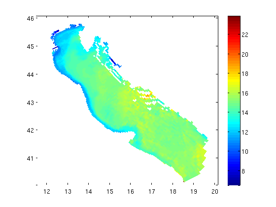
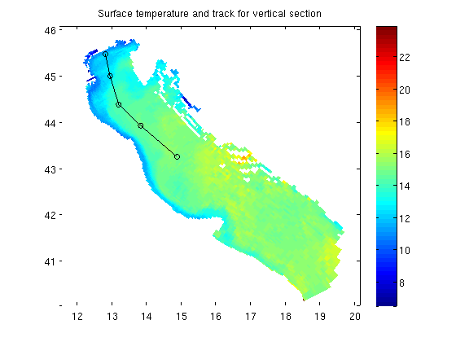
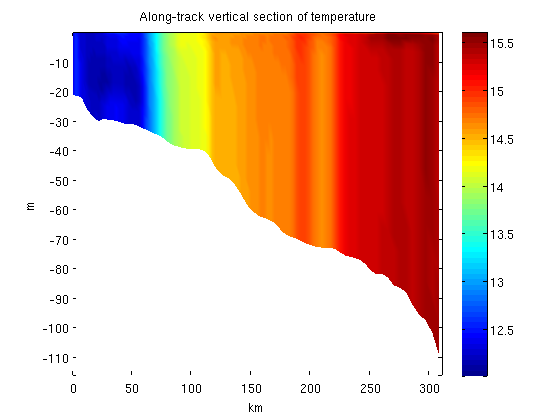

Contents
GEODEMO_2
Using VSLICEG to create a vertical section from a 3D field
% OpenDAP dataset: url='http://geoport.whoi.edu/thredds/dodsC/usgs/vault0/models/examples/bora_feb.nc';
Use nj_tbx legacy functions in NCTOOLBOX
here we'll use a convenience function nj_tslice that returns a full 3D field and grid (t,z,y,x) at a particular time step
itime=1;
[data,grd] = nj_tslice(url,'temp',itime);
Plot the surface temperature from this data
here we are using ROMS output, where the last level(end) is the surface
figure; pcolorjw(grd.lon,grd.lat,double(data(end,:,:))); colorbar
Create a vertical cross section through the gridded dataset
specify a lon,lat track along which to calculate the vertical slice:
track=[ 12.7950 45.4588 12.9280 44.9895 13.1773 44.3736 13.8090 43.9190 14.8562 43.2444]; lon=track(:,1); lat=track(:,2); hold on; plot(lon,lat,'k-o') hold off; title('Surface temperature and track for vertical section');
calculate the vertical section using VSLICEG
[x,y,vdata] = vsliceg(data,grd,lon,lat); figure; pcolorjw(x,y,vdata);ylabel('m');xlabel('km'); colorbar title('Along-track vertical section of temperature'); shading interp
griddata_lite is triangulating data ...
Warning: TSEARCH will be removed in a future release. Use DelaunayTri/pointLocation instead.
... triangulation complete
griddata_lite is triangulating data ...
Warning: TSEARCH will be removed in a future release. Use DelaunayTri/pointLocation instead.
... triangulation complete
